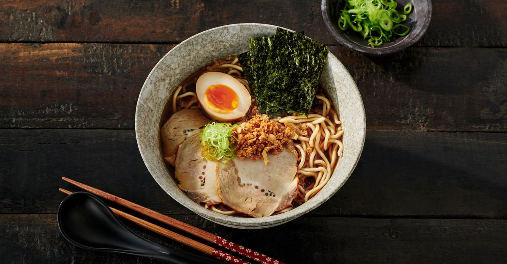

Ramen

Decription
Japanese noodle dish. It consists of Chinese-style wheat noodles (or 中華麺, chūkamen) served in a broth.
Common flavors are soy sauce and miso, with typical toppings including sliced pork (chāshū), nori (dried seaweed), menma (bamboo shoots), and scallions.
Ramen has its roots in Chinese noodle dishes. Nearly every region in Japan has its own variation of ramen, such as the tonkotsu (pork bone broth) ramen of Kyushu and the miso ramen of Hokkaido.
Ingredients
- 3 ½ cups vegetable broth
- 1 (3.5 ounce) package ramen noodles with dried vegetables
- 2 teaspoons soy sauce
- ½ teaspoon chili oil
- ½ teaspoon minced fresh ginger root
- 1 teaspoon sesame oil
- 2 green onions, sliced
Steps
- In a medium saucepan combine broth and noodles.
- Cover and bring to a boil over high heat; stir to break up noodles.
- Reduce heat to medium and add soy sauce, chili oil and ginger.
- Simmer, uncovered, for 10 minutes.
- Stir in sesame oil and garnish with green onions.
go back